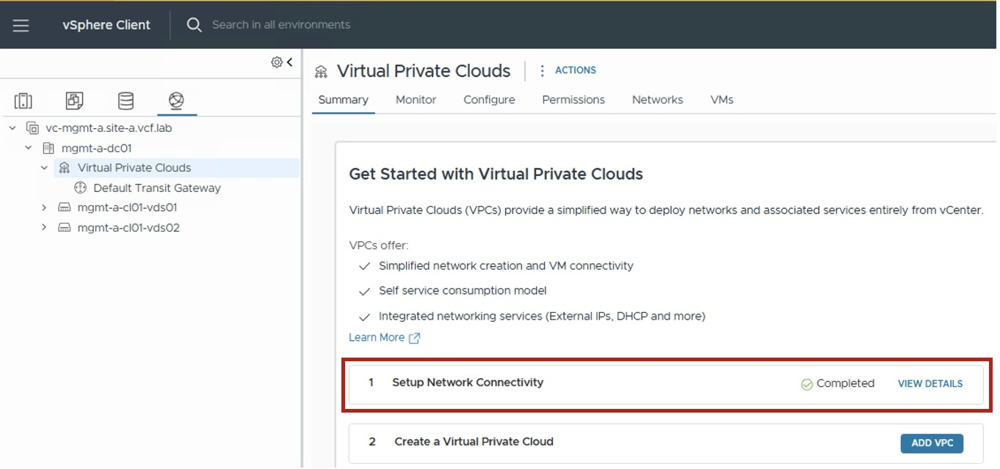

vCenter Network Services
{kind=link}
This section describes the procedures for configuring network services via the vSphere Client.
VPC Network Services
Explore the configuration guides for each VPC network service:
{kind=link}
- VPC Gateway
Logical router for VPC networking. - VPC Subnet
Logical Subnet (to connect VMs/K8s workloads).
Optionally, a Subnet-VLAN can also be created. - NAT
Supports multiple NAT configurations:
. External-IP (1:1 NAT)
. Outbound-NAT (N:1 SNAT)
. NAT (SNAT/DNAT) - DHCP
DHCP services can be configured as:
. DHCP Server (managed by VCF)
. DHCP Relay (using an external DHCP server such as Infoblox) -
Load Balancer
Configuration not available from vCenter (available through VMware AVI Load Balancer). -
VPN
Configuration not available from vCenter (available through NSX).
Prerequisite: vCenter must be VPC-ready
Before configuring VPC network services, the VPC Network Connectivity (Centralized or Distributed) must be configured. 
{kind=link}
VPC Northbound Architecture
Explore the configuration guides for each VCF Network Infrastructure and External Connectivity & Service:
{kind=link}
VCF Network Infrastructure
- Edge Cluster / Edge Node
NSX Edge appliances providing centralized network services for Central Transit Gateway Designs. - VNA Cluster / VNA Node
NSX Virtual Network appliances providing centralized network services for Distributed Transit Gateway Designs. -
Tier-0 / BGP
Tier-0 logical router providing connectivity between Centralized Transit Gateways and the physical network.
Configuration not available from vCenter (available from NSX).
External Connectivity & Services
- External Connection
Connection between the VPC environment and the physical network. - Transit Gateway
Logical router connecting VPC Gateways to physical networks. - IP Blocks External (Infoblox) + TGW Priv.
IP blocks used for VPC IP allocation.
Not represented in the diagram. - Network Span
Defines how VPC subnets span across vCenter clusters.
Not represented in the diagram. - Connectivity Profile
Defines the VPC's connection to the Transit Gateway, specifies the assigned External and Private-TGW IP blocks, and determines which VPC Services are enabled.
Not represented in the diagram. - Connectivity Policy
Defines cross-VPC communication rules.
Not represented in the diagram.
Personal Node on what could be added later
- section to talk about "Design" to help customers choose between all those options (Centralized / Dist) and what needs to be configured for each
- corner use case "Internet/DC1" External Connections
- Infoblox
Document Versioning
This guide is updated for VCF 9.1+.
If you are running an older version, some options may not be available.